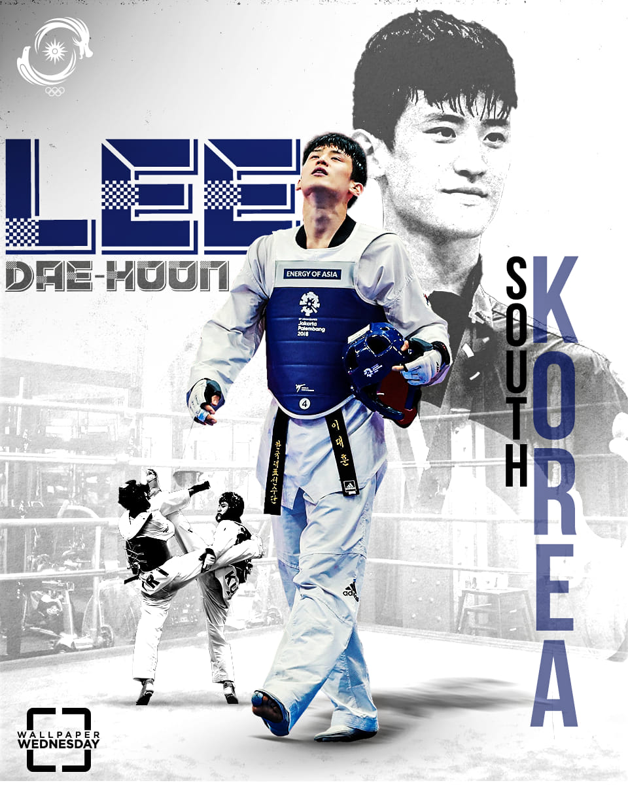

LEE DAE HOON
TAEKWONDO ATHLETE

- Lee DaeHoon (born February 5, 1992) is a South Korean taekwondo athlete.
- He won a bronze medal in the 2016 Summer Olympics and a silver in the 2012 Summer Olympics. He has achieved world first level rankings in the under 68 kg weight class.
- Lee grew up practicing martial art at his father's taekwondo academy from age 5. He won the gold medal at the 2010 Asian Games,[5] and repeated the feat at the 2014 Asian Games in Incheon.
- Originally a bantamweight (under 63 kg), Lee temporarily went down in weight to flyweight (under 58 kg) after the 2011 World Championships in order to compete in the 2012 Olympics, where there were only four weight classes.
- Lee made his international flyweight debut at the 2011 World Taekwondo Olympic Qualification Tournament in Baku, Azerbaijan where he had his first international loss to 2008 Olympic silver medalist Gabriel Mercedes 14–12 in the semifinals.
- In May 2012, however, he captured his first flyweight gold medal at the 2012 Asian Taekwondo Championships, beating reigning Asian flyweight champion PenEk Karaket 8–4 in the final bout.
- At the 2016 Summer Olympics Lee won a bronze medal, beating Jaouad Achab from Belgium 11–7.
- In 2016 WTF World Taekwondo Grand-Prix, Lee won gold against Konstantin Minin. Lee's father, Lee Joo-Yeol, used to run his own taekwondo academy.
- When he was studying at Yongin University, he was playing at under58kg and he would do four training sessions a day, then he would go running at night to lose weight.
- The reason Lee is such a high scorer, according to Cullen, is his no-fear approach to distance management. "The reason he is so accurate is that he stands at dangerdistance"
“I enjoy taekwondo; I think that's important,” Lee said. “I have got everything except Olympic gold, but I would do anything for a happy life.” -LEE DAE HOON